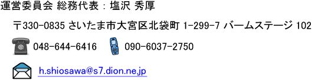

| トップページ 最新情報 理工体柔道部の紹介 活動状況 OB/OG会 連絡先 |
|
OB/OG会運営委員会からのお知らせ
−会員登録のお願い−
運営委員会では，現在，我が柔道部の先輩方に，本会への入会（登録）手続きをしていただく様，お願いしております。慶應義塾大学理工学部体育会柔道部に所属されていた方々で，まだ登録をされていない方は，ぜひ，下記まで，ご連絡下さい。

−会員登録状況−
2009年8月8日現在で，82名の方にご登録いただきました。ご登録者の名簿は，こちら(PDF)からご覧になれます。名簿記載者以外の方で，会員登録していただける方は，ぜひとも，上述の塩沢までご連絡ください。
−運営委員会に対するご意見・ご要望をお寄せ下さい−
ご意見やご要望等がありましたら，上記の塩沢まで，お寄せ下さい。
理工体柔道部OB/OG会について
−設立経緯−
当柔道部創立後，永い期間，正式なOB会は組織されておらず，熱心なOB達の自発的な活動として，3〜5年おきに親睦会を開催したり，有志の寄付により現役活動の援助を行って来ました。その一環として，2005年4月に「創部50周年記念式典」を開催した折「そろそろ正式にOB会を立ち上げ，組織的に活動して行こう。」と設立が決定されました。
−OB/OG会の動き−
2006年11月10日に設立総会を開催し，会の名称を「慶應義塾大学理工学部体育会柔道部OB・OG会」として，活動を始めました。
現在は，活動実務を担当する運営委員会が中心になって，会員の正式入会手続き（各OB・OGの登録意思確認）を行っている段階ですが，並行して，出来る範囲での現役活動への支援も進めています。
また，会員各位・現役諸君の間での情報交換や，会の広報活動を目的として，ここに，ホームページを立ち上げました。ホームページといってもまだ形ばかりで，内容不十分なものですが，今後，皆様方のご意見もいただき，時間を掛けて，充実させていきたいと思っております。皆様のご意見，ご要望等をお待ちしております。
−会組織と役員−
−設立総会の様子−
情報交換
−会員近況・ふるさと自慢・私の仕事−
現役部員や会員に，ご投稿をお願いいたします。
運営委員会から，別途，執筆依頼をさせていただくこともありますので，よろしくお願いいたします。 |
||||||||||||||||||||||||||||||||||||||||||||||